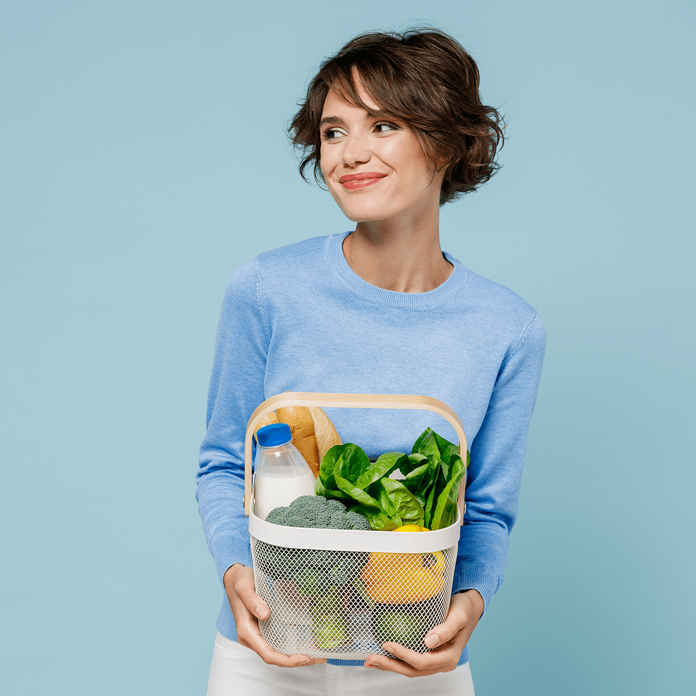

Oligase® 600
Die einzigartige Enzymmischung zum Spalten unverdaulicher FODMAP Oligo- und Polysaccharide aus Hülsenfrüchten, Gemüse und Getreide. So lassen sich auch blähende Lebensmittel wieder unbeschwert genießen.
- Vier Enzyme: α-Galactosidase, Saccharase, Cellulase, Hemicellulase
- Spaltet Raffinose, Stachyose und Verbascose
- 600 GalU Aktivität pro Kapsel
- Ideal für eine FODMAP-bewusste Ernährung
Warum Oligase® 600 hilft
Hülsenfrüchte, Kohl, Zwiebeln und Vollkornprodukte enthalten mehrfach verkettete Zucker (Oligo- und Polysaccharide wie Raffinose, Stachyose und Verbascose), die der menschliche Darm nicht selbst aufspalten kann. Im Dickdarm werden sie von Bakterien vergoren – es entstehen Gase und Blähungen.
Die Enzymkombination in Oligase® 600 spaltet diese unverdaulichen Mehrfachzucker bereits während der Verdauung auf. So beugen Sie Beschwerden vor und können ballaststoffreiche, gesunde Lebensmittel wieder genießen.
Mehr Genuss bei pflanzenreicher Ernährung
Bohnen, Linsen, Kohl, Brokkoli oder Vollkornprodukte sind wertvoll – liegen aber manchmal schwer im Bauch. Oligase® 600 unterstützt die Verdauung schwer verdaulicher Kohlenhydrate, sodass Sie eine ballaststoffreiche Ernährung wieder besser genießen können – zuhause, unterwegs oder im Restaurant.
Beratung anfragen
So einfach ist die Einnahme
Zur Mahlzeit einnehmen
1–3 Kapseln zu Beginn einer blähenden Mahlzeit mit etwas Flüssigkeit einnehmen – maximal 15 Kapseln pro Tag.
Enzyme spalten
Die vier Enzyme zerlegen die unverdaulichen Oligo- und Polysaccharide während der Verdauung.
Blähungen vorbeugen
Weniger Gärung im Dickdarm bedeutet weniger Blähungen – für mehr Wohlbefinden nach dem Essen.